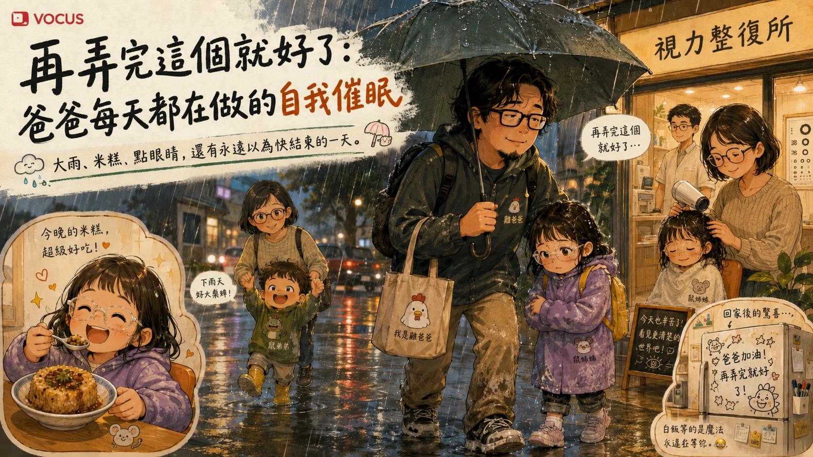

生活最累的常不是大事，而是每當以為結束，又默默有了下一題...

最近雞爸爸不知道是不是 A 流之後整個人還沒完全回神，總覺得腦袋空空、沒什麼靈感。
沒有哪件事情會讓雞爸爸突然冒出：「好，來寫一篇文章吧！」
後來想想，可能不是沒有事情...而是小事情一件接著一件發生，還來不及在腦袋裡變成一個故事，就被下一件事情蓋過去了...
討厭這種下雨天，帶超級大傘都沒有用
最近傍晚五、六點的雨，真的很誇張，不是那種「還好今天有帶傘」的雨。
而是看到外面的雨勢，就算雞爸爸已經拿出家裡那把超級大傘，也知道等一下褲管、鞋子、襪子肯定全部都要失守...這把大傘能夠到底保護什麼，雞爸爸也不是很確定...
可能只有在撐著它的時候，稍微保護了一點尊嚴...
偏偏星期二、星期五又是鼠姊姊要去點眼睛的日子。光是下午六點從幼兒園門口接到鼠姊姊，再走到車上的短短幾分鐘，兩人的鞋襪、褲管早就全部淪陷，六點半也肯定到不了...
鼠姊姊一上車就開始哀號：「鞋子濕掉了！」「襪子也濕了！」「頭髮也濕了！」
雞爸爸帶著鼠姊姊，再去接鼠媽媽和龍弟弟，抵達視力整復所時，都已經快晚上七點...
鼠姊姊一開門就喊：「好冷喔～」
整復師看她整個人濕濕的，還很貼心地問：「要不要先吹一下頭髮，再開始？」
雞爸爸覺得還滿貼心的，不過每次這個時候，除了點眼睛以外，還有另外一個非常現實的問題：晚餐還沒吃。於是雞爸爸請鼠媽媽先幫鼠姊姊吹頭髮，自己趁這空檔下樓找晚餐。
鼠姊姊原本說想吃麵包，結果走到巷口，看到一家賣台南米糕、肉燥飯和擔仔麵的店。雞爸爸想了一下，難得今天鼠媽媽可以在樓上幫忙吹頭髮，今天又被這場大雨折騰得亂七八糟，好像可以不要只讓大家啃麵包。
於是米糕、肉燥飯、擔仔麵都買了一份回去，沒想到時間還真的卡得剛剛好。雞爸爸回到整復所時，鼠姊姊第一輪點眼睛正好有空檔，可以趕快坐下來吃晚餐。原本比較喜歡吃湯麵的鼠姊姊，先吃了幾口擔仔麵，後來居然又開始吃台南米糕，而且吃得還滿開心。
吃完，再趕快回去點第二輪眼睛...
等到第二輪點穴終於結束，雞爸爸心裡只剩一個念頭：好了，今天差不多可以結束了吧。結果鼠姊姊走出來，第一句居然是：「爸爸，剛剛我的米糕呢？」雞爸爸愣了一下。
「妳的米糕？妳剛剛不是才吃完嗎？」看來那份米糕，是真的有讓鼠姊姊念念不忘。
爸爸忙著趕行程，小孩忙著過生活
現在回頭想，雞爸爸覺得這一幕其實滿有趣的。
同樣一個晚上，雞爸爸和鼠姊姊過的，好像根本不是同一天。
雞爸爸記得的是：趕時間、雨很大、鞋襪全濕、晚餐還沒吃、吃完還要點第二次眼睛。
可是鼠姊姊可能只記得：今天鼠媽媽幫她吹頭髮、雞爸爸買了好吃的米糕。
雞爸爸忙著看時間、鼠姊姊忙著看碗裡還剩幾口。
大人的一天已經進入省電模式，小孩好像還在探索世界...
回家就可以休息了？當然沒有
點完眼睛，雞爸爸又自已催眠自己：「加油，只要回家就可以休息了。」
事實證明，理想與現實的差距，總是超乎雞爸爸的想像...
回到家後，鼠姊姊拿出長頸鹿沒畫完的作業繼續畫畫，龍弟弟也完全沒有要睡覺的意思。
雞爸爸看著兩個孩子，很想問：「我剛剛開車，你姊弟倆就在車上給我快充是吧...？」
爸爸的電量已經剩 3%，兩個小朋友看起來像剛充飽？
終於一路折騰到晚上十一點多，好不容易把兩個小朋友丟上床。
雞爸爸終於有了一種世界即將恢復安靜的錯覺，結果關上餐廳的燈，竟看見家裡的冰櫃...上面被鼠姊姊用黑色白板筆畫得亂七八糟，雞爸爸真的站在冰櫃前面，安靜了幾秒...
原來鼠姊姊的「畫畫」…創作範圍比爸爸理解得更廣。
小朋友上床睡覺，也不代表重新歸零
雞爸爸本來以為，至少睡一覺就好了吧，隔天又是新的一天。
結果早上鼠姊姊不是單純起不來而已。一邊刷牙洗臉邊說：「我還想睡覺。」
吃著早餐又說：「爸爸，我眼睛痛。」
好不容易終於出門，坐上車「爸爸，車子太冷了。」但又忘記帶外套...
鼠媽媽好不容易借外套給她，又覺得：「這外套不舒服。」
其實最消耗人的，也不完全是這些抱怨本身，而是爸爸不能真的完全不理。
眼睛痛是真的不舒服嗎？冷氣是不是確實太強？衣服是不是哪裡卡到了？
每一件事情都不大，可是每一件事情，都要停一下、看一下、判斷一下。
然後雞爸爸看了一眼今天的行程，星期三，今天又要去看院長複診...
原來昨天不是結束，只是中場休息...
「再弄完這個就好了」只是爸媽每天自我催眠
雞爸爸這兩天突然發現，當爸媽以後腦波很弱，很容易想得很美好：再弄完這個就好了。點完眼睛就好了、回家就好了、小朋友睡了就好了、隔天順利出門就好了...
可是每一次「好了」後面，好像都還有下一題...
所以有小孩以後，最危險的念頭可能就是：「這應該是今天最後一件事了吧？」
這跟恐怖片裡有人說：「我出去看一下，馬上回來。」大概有差不多的可信度。
但雞爸爸後來又想了一下，昨天如果只記得那場雨，那的確是一個很累的晚上，褲管濕了...鞋子濕了...襪子也濕了...時間一路拖到很晚，回家還有兩個不想睡的小孩，以及一台突然變成鼠姊姊畫布的冰櫃...
可是同一個晚上，也有另外一個畫面，鼠姊姊吃著一份原本根本不在行程裡的米糕，吃得很開心，甚至吃完、點完眼睛以後，還念念不忘地問：「爸爸，剛剛我的米糕呢？」
雞爸爸發現，以前只有自己的時候，很習慣替一天下結論，今天很累、今天很倒楣、今天很順、今天很開心。
可是有孩子以後，一天好像很少只有一種答案，雨是真的很大、爸爸是真的很累、鼠姊姊的米糕也是真的很好吃，這些事情，其實可以同時存在。
雞爸爸最近一直覺得自己沒有故事，可是回頭一看，那雙濕掉的襪子、鼠姊姊念念不忘的米糕，還有十一點多才發現被畫得亂七八糟的冰櫃，其實早就把這一天記下來了。
可能不是沒有靈感...只是當生活靠得太近，我們總是忙著處理下一件事，還來不及發現：
原來故事早就發生了。生活，也從來不是等所有事情都「好了」以後才開始...
雞爸爸只記得鼠媽媽一邊吃著台南米糕一邊說著：「好久沒有去台南玩了...」